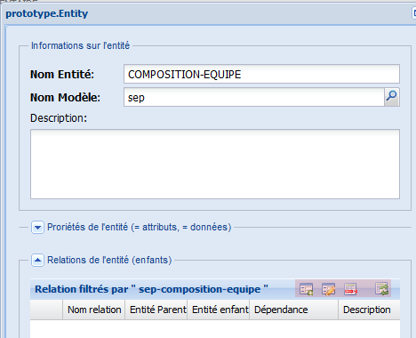

Créer une propriété¶
La quatrième étape pour construire notre prototype est la création des propriétés des entités.
Il y a deux façons de créer les propriétés d’une entité que nous allons explorer ci-bas :
Créer une nouvelle propriété à partir du menu principal¶

Figure 47 : créer une propriété.
- À partir du menu principal, cliquez deux fois sur Propriété du dossier Prototype pour ouvrir l’onglet Propriété.
- Cliquez sur le bouton Ajouter, un formulaire sera affiché sur l’écran.
- Dans le formulaire, remplissez (voir figure plus bas) :
le nom de la propriété (information obligatoire);
le nom de l’entité (information obligatoire); cliquez sur le bouton pour sélectionner l’entité de la liste;
la description de l’entité (information optionnelle);
cochez la case de la clé primaire (isPrimary) si la propriété est la clé de l’entité. Quand vous cochez cette case, la case Réquis (isRequired) est cochée automatiquement.
Si la propriété n’est pas une clé primaire, mais que la propriété est obligatoire, cochez la case Réquis (isRequired).
La case Clé étrangère est cochée automatiquement par l’application et elle est disponible en lecture seulement;
sélectionnez le Type de base (baseType, information optionnelle). Le type de base par défaut est string. Si le choix de type de base est décimal, remplissez le champ Décimales.
Si le choix de type de base est combo, remplissez le champ Valeurs de la liste déroulante et le champ Valeur par défaut;
la longueur (prpLength, information optionnelle).
la valeur par défaut (prpDefault, information optionnelle). Ce champ est utilisé en combinaison avec le type de base combo. Inscrivez dans ce champ la valeur par défaut de votre liste de valeurs. Par exemple, si vous avez une liste de provinces et que votre projet est pour les gens de Québec, inscrivez QC dans la valeur par défaut. Cette valeur sera le premier choix montré à l’usager;
les Décimales (prpScale, information optionnelle). Ce champ est utilisé en combinaison avec le type de base décimal. Inscrivez dans ce champ le nombre de positions après la virgule pour un chiffre;
les Valeurs liste déroulante (prpChoices, information optionnelle). Ce champ est utilisé en combinaison avec le type de base combo. Inscrivez la liste de valeurs pour une propriété. Les mots doivent être séparés par des virgules sans espaces. Exemple: QC,ON,NS,NB,BC...
voir les pages Prototype et annexe pour plus d’options sur les propriétés.
- Cliquez sur le bouton Enregistrer de la fenêtre.
Créer une nouvelle propriété à partir du formulaire de l’entité¶

Figure 48 : créer une propriété détails.
- À partir du formulaire de l’entité, cliquez sur le bouton Ajouter de la grille « propriétés filtrées par ” ” » ;
- Un nouveau formulaire (comme celui de la figure à gauche) s’affichera dans l’interface ;
- Dans le formulaire, remplissez les parties comme dans la partie précédente.
- Cliquez sur le bouton Enregistrer de la fenêtre.
Notez dans la deuxième façon présentée dans ce texte que quand vous cliquez sur le bouton Enregistrer, la grille « Relation filtrées par ” “» située en bas de la grille « Propriétés filtrées par ” “» affiche les contrôles d’édition (voir figure 49). À partir de cette grille, il est possible de créer les relations entre les entités en cliquant sur le bouton Ajouter du menu d’édition.
Ceci est une de deux façons de créer les relations entre les entités. Passez à l’étape créer les relations entre les entités pour continuer avec la démarche.
Figure 49 : ajout d’une relation à partir de la propriété.